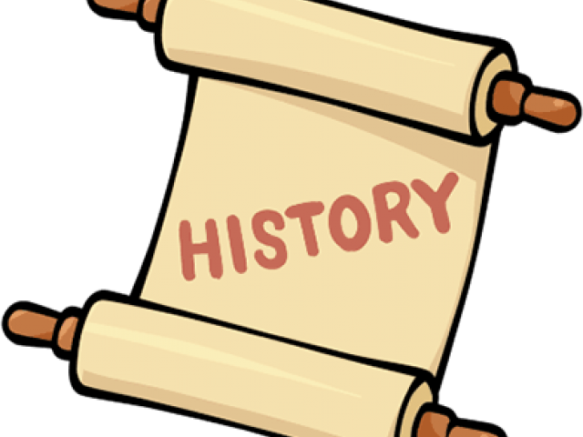

Ludic Historian
Gaming Like a Historian

My overall goal here is to present a historiography tracing the original sources for particular facts, any disagreements between the sources, and commentary on what I feel was the most likely sequence of events in certain aspects of gaming history, particularly related to ludonarrative aspects.
For many topics, this will be a relatively straight-forward task of stitching together primary sources to tell a narrative; for other topics, however, this will involve sifting through ambiguous, at best, and contradictory, at worst, accounts and information.
To do all that requires a certain approach to history and this page will talk aboout that approach. But front and center to this approach is having a historical consciousness.
To possess a historical sense does not mean simply to possess information about the past. It means to have a different consciousness, a historical consciousness, to have incorporated into our minds a mode of understanding that profoundly influences the way we look at the world. History adds another dimension to our view of the world and enriches our experience. Someone with a historical sense sees reality differently.
That comes from Gordon Wood in his book The Purpose of the Past: Reflections on the Uses of History.
Having such a historical sensibility requires the historian to possess various characteristics. One of the most important of those is a toleration and even appreciation of uncertainty, surprise, and unintended consequences in the operative human context of the history being studied. This needs to be coupled to a comfort with indeterminacy and multi-causal explanations.
Another such sensibility is a recognition of "vertical history" and "horizontal history." The vertical context is about assessing the temporal, or short, medium, and long term causes of an event, and how they interact. The horizontal aspect looks at the spatial dimension of history, or how different issues are interconnected and related.
There is also a sensibility that seems so obvious as to not require mention and yet it very much does. This is the sensibility that we can, in fact, discovery much about the history we want to study.
Because contesting visions of the past have failed to create a comfortable consensus, and because change is the essence of historical experience, some critics have argued there can be no stable, knowable past. They have failed to understand that just because our definitions or descriptions change, does not mean that the phenomenon being described does not exist or cannot ultimately be known with some certainty.
That comes the book Telling the Truth About History by Joyce Appleby, Lynn Hunt, and Margaret Jacob. It's critical to believe that there is actually something "out there" that is discoverable through various chains of evidence.
An Ecological View
One of my insights into studying how to be a historian has been the following: move from the reductionist into the ecological. Explaining that requires unpacking a few things.
How we learn — and by "we" I mean all of us — is, to a very large extent, based on what things have in common. We quite literally depend on metaphor, on the recognition of patterns, on the recognition that something is "like" something else. And then we exploit that recognition to give ourselves more insights.
I realize that what might seem out of place in that list is the idea of metaphor. Yet, on that very idea, consider the words of Aristotle in his On the Art of Poetry:
A good metaphor implies an intuitive perception of the similarity in dissimilars.
John Ziman's Reliable Knowledge: An Exploration of the Grounds for Belief in Science is, for me, an excellent book and in that book John points out that scientific insights often arise from just such realizations.
The behavior of an electron in an atom is 'like' the vibration of air in a spherical container ... the random configuration of the long chain of atoms in a polymer molecule is 'like' the motion of a drunkard across a village green.
All of this led me to the understanding that there's the reductionist view of reality and the ecological view of reality. A lot of work you'll come across in the historical field is of the reductionist sort. The reductionist viewpoint is the belief that you can understand reality by breaking it up into its various parts. John Lewis Gaddis, in his book The Landscape of History: How Historians Map the Past, says:
It's critical to reductionism that causes be ranked hierarchically. To invoke a democracy of causes — to suggest that an event may have had many antecedents — is considered to be, well, mushy.
True enough and people often don't like that "mushy" view. Thus people often turn to reductionism as a means of control. As Eelco Runia put it in Moved by the Past: Discontinuity and Historical Mutation:
The discipline [of history] puts a premium on "sorting things out," and [thus] consequently the history departments spit out specialists in organizing things who have somehow lost the capacity to tolerate messiness.
How I would phrase this is that, in this reductionist view applied to history, we're removing the "messiness" and the "mushy" bits and thus we're getting a bit of a sanitized view. That view removes some of the jagged edges of history and those jagged edges are often where uncertainty exists. In terms of motivation for a reductionist historical context, it seems that we feel like we're gaining some "understanding" of the "true history" by imposing controls on how that history must have played out.
An ecological reality, on the other hand, is one where you recognize that it's often difficult to break things up into their component bits because so much depends upon so much else. Again, quoting Gaddis:
For while the ecological approach also values the specification of simple components, it does not stop with that: it considers how components interact to become systems whose nature can't be defined merely by calculating the sum of their parts.
Speaking somewhat to this same point, Clayton Roberts, in his book The Logic of Historical Explanation, makes a lot of good points about the overall ecological view in history. For example, in accounting for what happened at Hiroshima on 6 August 1945, we tend to attach much greater importance to the fact that President Truman ordered the dropping of an atomic bomb than to the decision of the Army Air Force to carry out his orders. It's a bit of a harsh example but that's also what drives home the relevance of the point.
Another more recent example might be the 6 January 2022 insurrection at the United States capitol. Accounts have generally had much to say about how Donald Trump may have instigated certain people to take the actions they took, such as storming the building, but those accounts often have less to say about why people made their own volitional choices to take those actions, regardless of whether they were being incited to do so.
Ecological Views Lead to Unification
An important point is that ecological views lead to unification. This requires taking a bit of a deep dive into how that manifests, particularly in the sciences.
The Basic Idea of Unification
The general concept of unification is fairly simple. If we have two theories that explain two apparently different behaviors of whatever it is we're studying, it's sometimes possible to replace both of those theories with a single theory.
This is considered useful if that resulting single theory still manages to explain the different behaviors. Being able to do that is largely what's meant by unification. It may seem counterintuitive but it's generally the case that the resulting "unified theory" will be simpler than either of the previous two theories. The reason for this — at least in many cases — is because the unified theory is revealing a deeper, underlying truth.
As I alluded to, it's easier to draw this point home with the sciences rather than history. There is a valid pedagogical point to doing this, however, because many have tried to state that the practice of history is a science. I'll come back to that point and how it relates to some of these examples.
Some Examples of Unifiers
Consider Galileo Galilei. Around 1638, he realized that constant velocity was an underlying truth. Assuming such constant velocity, there was no experiment you could perform that would tell you whether you were moving or standing still. This essentially unified the ideas of "moving" and "stationary."
Consider Isaac Newton. Around 1665, he wondered if the force that kept the moon in orbit around the Earth (and the planets around the Sun) was the same force that tugged at objects on the Earth, drawing them toward the ground, such as an apple falling out of a tree. This unification — of the forces of celestial mechanics and earthly mechanics — led to the formulation of a specific force called gravity. This made people realize we can treat the events in space with the same mechanics that we do events on Earth.
Consider Michael Faraday. Around 1831, he showed that if you push a magnet through a coil of wire, an electric current flows. Similarly, if you pass an electric current through a wire it can deflect a nearby magnetic compass. The idea was that electric currents create magnetic fields and moving magnetic fields create electric currents. This was electromagnetism, effectively unifying electricity and magnetism.
Consider James Clerk Maxwell. Around 1885, he refined Faraday's work showing that an electric field would generate a magnetic field and, conversely, a magnetic field would generate an electric field. Maxwell specifically showed that these fields would reinforce each other in an oscillatory manner. Thus was the idea of a self-sustaining electromagnetic wave conceived. This was a wave that traveled through space. Since this wave traveled, it had a speed. When that speed was calculated, Maxwell found it was the same as the speed of light. This meant that light was a form of electromagnetic wave. The unification here was the field of optics (light) with that of the previous unification, electromagnetism.
Consider Albert Einstein. Around 1905, he combined Maxwell's results with Newton's laws. This showed that the speed of light did not depend on the motion of an observer moving relative to the light. Einstein showed that you could combine the law of motion of Maxwell with the laws of motion of Newton — if, that is, you were willing to consider space and time to be dynamic properties of the universe. This idea unified not just electromagnetism with mechanics but also space with time. As a side-benefit, this also unified the concept of mass with energy.
Unifications Show the Wider Ecology
What you might notice with the above list of unifications is that everything sort of builds on everything else. Later unifications don't throw away what came before; rather, they incorporate it. That iterative inclusion of previous unifications leads to a series of relations between concepts and that is what makes everything ecological in nature. Let's keep digging a bit to drive home this point.
In 1916, Einstein pulled a Galileo. Remember that Galileo talked about constant motion and that an object experiencing no forces will stay in its state of motion, where zero motion (or stationary) was just a constant motion of zero. Well, Einstein used that same idea and said that the force experienced by an observer undergoing constant acceleration was indistinguishable from the force of gravity that Newton talked about. So gravity and accelerated motion were unified.
But it even got a bit more interesting. It turns out that if objects were in free-fall they would not feel any force of gravity at all. But this meant that gravity didn't exist as a "force" in its own right; rather, gravity was the curvature of space. Objects traveling in a straight line in a curved space would appear to be drawn towards the center of curvature. This motion of being drawn along lines of curvature can thus be interpreted as the force of gravity!
So here the unification was the notion of gravity with the geometry of space itself. And since time was already linked with space, via previous unifications, this meant gravity — or, rather, curvature — could impact time as well.
So one thing to notice here is that as we keep going along these lines of thinking, the unifications get a little less intuitive, a little harder to reason about. But they are all critically important. In fact, I want to come back to Einstein's specific work in a bit but, for now, let's consider one more stop here which will certainly reinforce the "less intuitive" point.
In the 1960s, when the study of particle physics was really heating up, there was a perceived symmetry between the particle associated with electromagnetism (the photon) and the previously theorized-about nuclear force. When finally discovered, the particles associated with the latter force were given the odd names W+, W-, and Z. The idea was that all four particles would be massless — thus all symmetrical — at high energies. But as the energy steadily decreased, this symmetry would be broken and the particles would take on different values and thus be discrete things.
As it turned out, the photon was left with a mass value of zero but the W+, W-, and Z particles all ended up with some non-zero mass value. What this meant was that this nuclear force could only operate at short ranges. In fact, it's called the "weak nuclear force" for that reason. Whereas massless photons, as part of the electromagnetic force, can carry light across the entire universe and thus their range is obviously quite long.
The point here is that the two forces of electromagnetism and the weak nuclear force were, in fact, the same force behaving in two very different ways at the low energies that we human beings are mainly aware of and can experience. But if we have a realm that is sufficiently energetic enough, and thus hot enough, the electromagnetic force and the weak force would merge into a single force. This force was eventually proven to exist in the 1980s and was called the electroweak force.
Again, notice how even this one more leap up the unification chain took us into even greater realms of complexity. In fact, it took a good amount of effort to even recognize the unification, much less reason about it. Yet this greater complexity is actually about a concept that's providing more simplicity for the overall picture. Dealing with that particular balance takes good practitioners of a discipline.
Finding "Is Like" Takes Good Practitioners
What happens in all of the above cases is the use of imagination in terms of saying how something might be "like" something else; as in, "Hey, maybe it's the case that accelerated motion is like gravity." Unification, which is a refined form of saying what something "is like," requires having a certain amount of intuition that you harness to gather insight. In this context, I think it's important to note something that Andrew Thomas says in his book Hidden in Plain Sight:
The ideas by which unification is achieved are generally extremely simple ideas — anyone understands these ideas. In fact, we could say that any unifying idea has to be simple.
Speaking in the context of the examples I provided above, Andrew says:
It was as if these great unifiers picked up on something which was under our noses all the time, something which was missed perhaps because it was too simple. Something hidden in plain sight.
How does this relate to the historical focus that I'm mainly concentrating on?
I don't so much believe that history holds much that is "hidden in plain sight" necessarily but I do think the unification concept, and thus the ecological thinking that leads to it, allows us to hone our skills in ideas like deriving processes (what happens in history) from structures (what history leaves us to investigate), fitting representations (a way of viewing what happened in history) to realities (what actually happened in history), as well as learning to privilege neither induction nor deduction.
In fact, on that last point, I think abductive reasoning is a large part of what we seek. Thus I believe that historical reasoning is not just about confirmation or falsification, as in the sciences, but rather about implausification. I think it's worth considering the words of Sabine Hossenfelder in her excellent book Lost in Math: How Beauty Leads Physics Astray:
What I learn, however, is that Karl Popper's idea that scientific theories must be falsifiable has long been an outdated philosophy. I am glad to hear this, as it's a philosophy that nobody in science ever could have used, other than as a rhetorical device. It is rarely possible to actually falsify an idea, since ideas can always be modified or extended to match incoming evidence.
Sabine expands on this point a bit when talking about our ideas in general:
We "implausify" them: a continuously adapted theory becomes increasingly difficult and arcane — not to say ugly — and eventually practitioners lose interest. How much it takes to implausify an idea, however, depends on one's tolerance for repeatedly making a theory fit conflicting evidence.
I think this idea of "ugly" here can fit in well with the ideas of "mushy" and "messiness" from earlier. Beyond that, if there's one thing history often does, it presents us with conflicting evidence. And if there's one thing some people do when studying history, it's try to make some pre-existing theory fit with the evidence they are finding. Or, perhaps put a better way, they make the pre-existing theory fit only with those things they consider to be evidence.
A consequence of this is that people are often led to a selective bias in the evidence that they accept which, in turn, leads to a compromised view of standards of evidence. And, looked at in that way, certainly we can say that history "is like" science.
Does History Become Scientific?
Previously I said that "many have tried to state that history is a science" and it's worth perhaps exploring that a bit, particularly given that I just spent a whole lot of time talking about scientific ideas. But then I ended, quite deliberately, by saying that history is like science, as opposed to saying history is science. It's worth asking if there's a spectrum between "is like" and "is" in the ecological view.
Tom Griffiths, in his book The Art of Time Travel: Historians and Their Craft, has a good take on where scientists and historians align:
After the development of Einstein's general theory of relativity in 1915, it became meaningless to talk about space and time as absolute, as transcending the limits of the universe; instead, they became dynamic qualities of the universe itself. In effect, the universe became finite and historical; it was no longer unchanging but had a beginning and an end — a life. Without absolute time, each individual has their own personal measure of time that depends on where they are and how they are moving. Physicists and historians agree on this.
Indeed they do agree on this. Time and place are the cornerstones of history. History requires a setting, a place, in which events take place. Events, of course, are structures of time. And structures persisting in time are what dictate chronology and causation.
So here the humanities, in the form of history, and the sciences agree. Does that mean they are in alignment? Does that mean "is like" has shifted to "is"?
Here it's worth pointing out that established historians like Marc Bloch, E.H. Carr, Donald Akenson, John Gaddis, Keith Hancock, and John Fea have all recognized that the idea of the humanities in general, and history in particular, becoming "scientific" was an enterprise that was tried and has effectively failed. History, inherently, has more subjective elements than objective. And while history can teach us lessons about what might happen, based on the past, it would be hubris to suggest that it's predictive about human cultural and social changes.
Subjectivity and contingency are critical aspects of "doing history" which differs quite a bit from the broad practice of "doing science." Yet there's something interesting to consider here. Professor R.W. Davies said the following about E.H. Carr's thoughts:
It is evident that Carr had come to the conclusion that the relativity of scientific knowledge was greater than he had previously suggested. Time and place exert great influence on the theory and practice of the natural scientist. The interplay between hypothesis and concrete material in natural science closely resembles the interplay between generalization and fact in history. Valid scientific hypotheses do not necessarily possess the capacity for precise prediction which is often attributed to them; in some natural sciences they closely resemble the generalizations of the historian.
The bolded emphasis is mine. What I take from these thoughts is that while history should not be practiced as if it were "scientific," the idea of how the sciences are practiced can certainly inform our musings about, and research into, history.
Lee Smolin in his book Einstein's Unfinished Revolution: The Search for What Lies Beyond the Quantum said something that brings these thoughts together for me:
To have a scientific mind is to respect the consensus facts, which are the resolution of generations of dispute, while maintaining an open mind about the still unknown. It helps to have a humble sense of the essential mystery of the world, for the aspects that are known become even more mysterious when we examine them further. The more we know, the more curious it all is.
This, to me, very much sounds like a style of thinking we can apply to the context of a historian. So perhaps it's not so much that history "is like" science but rather that doing history "is like" practicing the scientific method. And if that's the case — and I do believe it is — then there is perhaps a logic that we can apply to being a historian and practicing historical thinking.